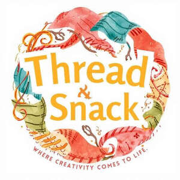

Trade Mark Journal No.2025/050 12 December 2025
UK00004305813 4 December 2025 (24,30)

- Class 24
- Textile fabrics; Textile fabric; Non-woven textile fabrics; Textiles; Tapestries of textile; Textile fabrics for use in manufacture; Quilts of textile; Textile fabrics for use in the manufacture of sportswear; Non-woven textile fabrics for use as interlinings; Tablemats of textile; Linings [textile]; Waterproof textile fabrics; Rubberized textile fabrics; Textile fabrics for lingerie; Textile tablecloths; Tablecloths of textile; Textile fabrics for the manufacture of clothing; Textile material; Material (Textile -); Doilies of textile; Handkerchiefs of textile; Textile handkerchiefs; Textile fabrics in the piece; Reinforced fabrics [textile]; Towelling [textile]; Non-woven textiles; Textile handkerchieves; Textile used as lining for clothing; Curtains of textile; Napery of textile; Napery [textile]; Textile fabrics for use in the manufacture of furniture; Fabrics being textile piece goods for use in embroidery; Friezes of textile; Plastic woven textile materials for use in agriculture; Bedroom textile fabrics; Textile napkins; Textile labels; Labels (textile); Labels of textile; Textile fabrics for use in the manufacture of curtains; Serviettes of textile; Textile serviettes; Textile fabrics for use in the manufacture of bedding; Viscose textiles; Non-woven textile articles; Covered rubber yarn fabrics [for textile use]; Textile fabrics for use in the manufacture of towels; Towels of textile; Towels [textile]; Towels [of textile]; Textile coasters; Coasters of textile; Fabrics being textile piece goods; Fabrics being textile piece goods for use in tapestry; Non-woven textile piece goods; Textile fabrics for use in the manufacture of pillowcases; Suiting materials [textile]; Textile fabrics for use in the manufacture of sheets; Fabrics for textile use; Polyester textiles; Textile goods, and substitutes for textile goods; Lining fabrics of textile in the piece; Textile fabrics for use in the manufacture of beds; Materials (Textile -) for use in the manufacture of footwear; Banners of textile; Banners textile; Furniture coverings of textile; Coverings (Furniture -) of textile; Resin impregnated textile fabrics; Flags of textile; Pennants of textile; Textile fabrics for use in the manufacture of wall coverings; Textile tissues; Fabrics being textile piece goods for use in manufacture; Textile goods for use as bedding; Printing blankets of textile material; Textiles for upholstery; Curtains of textile material; Coated woven textile materials; Materials for use in filtration [textile]; Fabrics being textile piece goods for use in patchwork; Textile fabric piece goods for use in the manufacture of clothing; Textiles and substitutes for textiles; Furnishing fabrics being textile piece goods; Textile linings in the piece.
- Class 30
- Confectionery; Chocolate confectionery; Fondants [confectionery]; Lollipops [confectionery]; Chocolate confectionery products; Confectionery chocolate products; Truffles [confectionery]; Dairy confectionery; Sugar confectionery; Marshmallow confectionery; Sherbets [confectionery]; Sherbet [confectionery]; Chocolate flavoured confectionery; Fruit confectionery; Chocolate-coated sugar confectionery; Chocolate confectionary; Peppermint for confectionery; Confectionery ices; Non-medicated confectionery candy; Ice confectionery; Flour confectionery; Non-medicated chocolate confectionery; Almond confectionery; Lozenges [confectionery]; Flavoured sugar confectionery; Peanut confectionery; Chocolate for confectionery and bread; Sesame confectionery; Frozen confectionery; Confectionery (Non-medicated -); Non-medicated confectionery; Chocolate confectionery containing pralines; Ginseng confectionery; Confectionery bars; Low-carbohydrate confectionery; Nut confectionery; Mint for confectionery; Confectionery items formed from chocolate; Non-medicated sugar confectionery; Sugar confectionery (Non-medicated -); Non-medicated confectionery containing chocolate; Dragees [non-medicated confectionery]; Confectionery items coated with chocolate; Confectionery chips for baking; Truffles (rum -) [confectionery]; Sweets (Non-medicated -) in the nature of sugar confectionery; Cocoa-based ingredients for confectionery products; Rock [confectionery]; Sherbets [confectionery ices]; Chocolate decorations for confectionery items; Boiled confectionery; Fruit jellies [confectionery]; Jellies (Fruit -) [confectionery]; Non-medicated flour confectionery; Prepared desserts [confectionery]; Non-medicated flour confectionery containing chocolate; Confectionery made of sugar; Non-medicated confectionery products; Confectionery products (Non-medicated -); Sugar paste for confectionery; Chocolate confections; Confectionery containing jelly; Non-medicated mint confectionery; Non-medicated flour confectionery coated with chocolate; Confectionery in the form of mousses; Ice confectionery in the form of lollipops; Lozenges [non-medicated confectionery]; Tablet (confectionary); Potato flour confectionery; Confectionery items (Non-medicated -); Mint flavoured confectionery (Non-medicated -); Chocolate confectionery having a praline flavour; Iced confectionery (Non-medicated -); Ice cream confectionery; Boiled sugar confectionery; Fruit drops [confectionery]; Bubble gum [confectionery]; Candies [sweets]; Chocolate sweets; Candy coated confections; Sweets [candy]; Chocolate candies; Sweets; Gum sweets.
SENCORE LTD